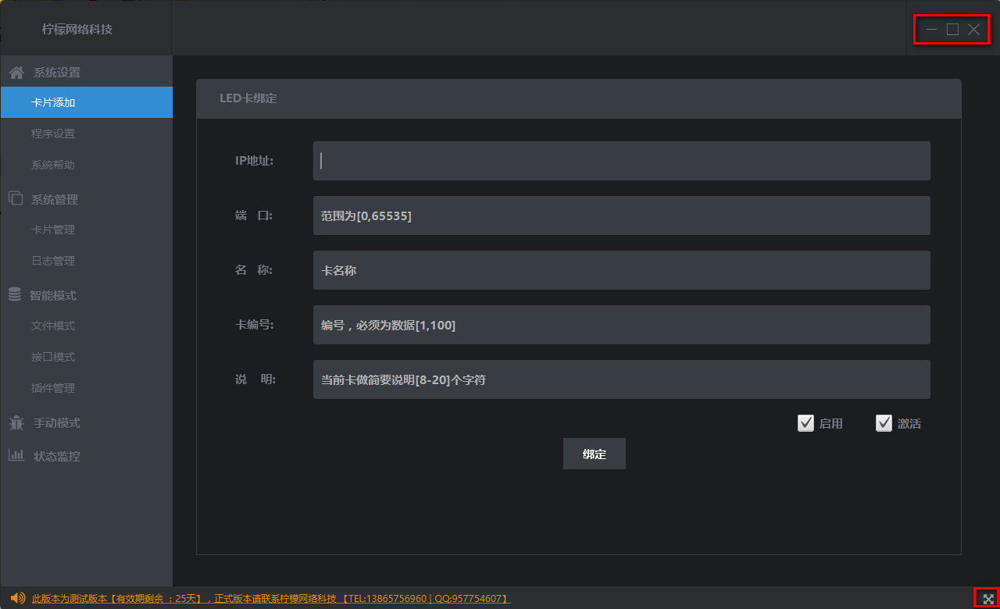
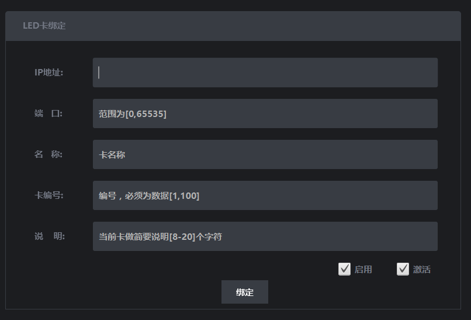
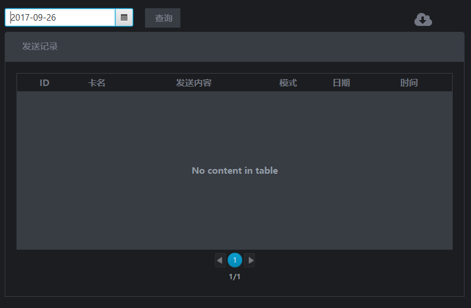
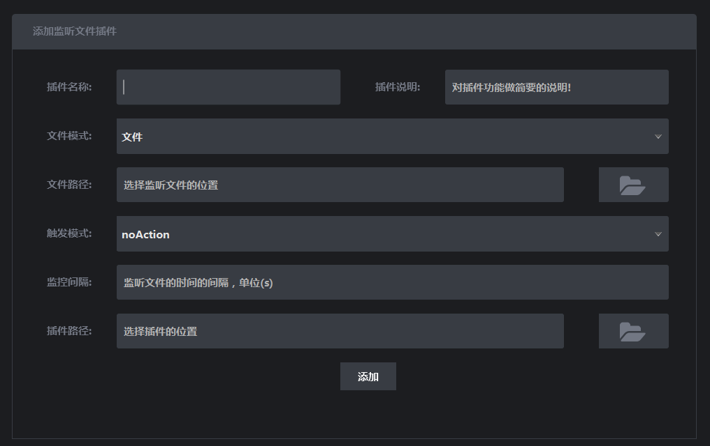
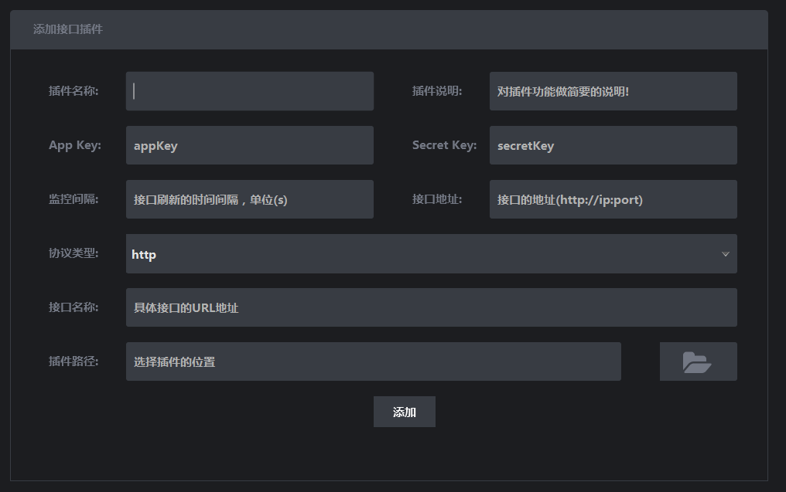

动态LED平台使用手册
【柠檬网络科技】
动态LED平台使用手册
【柠檬网络科技】
什么是动态LED平台？
动态LED平台是为了解决从数据的采集，解析，以及发送实现动态的一体化。
界面
包含核心需求，以及支持一些基本操作体验需求，例如，缩小，放大，最小，以及手动拖大和拖动以及全屏模式等

系统设置
包括三个模块，卡片添加、程序设置和系统帮助
卡片添加
主要实现LED卡的 绑定（支持绑定最大的LED卡的个数为100）

- IP地址 :LED卡的IP地址，必须符合规则(IPV4)有效，否则添加失败，一个IP只允许绑定一次。
- 端口 :LED卡的有效端口，端口范围为[0,65535]。
- 名称 :卡的名称，将用于程序的对卡的有效识别，名称不可重复。
- 卡编号 :程序会按照符合规则的按照该编号的大小排序进行消息发送。
- 说明 :可以对卡做简短的说明。
- 激活 :保证添加的卡的ip地址必须有效，并且可以UDP协议通信，只有激活的卡才能被手动模式使用。
- 启用 :一旦启用，必须要激活，只有启用和激活的卡，才被视为有效的卡，才可以被程序主动推送信息。
高级设置
主要对程序的基本参数的设置

- 系统名称 :改程序主界面左上角显示的公司名称，默认为柠檬网络科技。
- 状态间隔 :状态监控的监控间隔，单位为S。
系统帮助
主要对程序的使用规则的说明
系统管理
对系统的主要要素进行管理
卡片管理
列出绑定成功的LED卡，双击该卡，可以对当前卡进行删除，修改等操作，默认卡编号不可修改

日志管理
列出所有发送的日志记录，可以通过时间来查询，有必要时可以导出该文件

智能模式
程序的核心模块，实现对动态的支持
文件模式
主要实现对文件的动态监控，以插件的性能运行，需要导入插件，并且绑定卡，支持多个插件同时运行

- 插件名称 :当前插件的名称。
- 插件说明 :对当前插件做简要的说明。
- 文件模式 :对文件的类型的监控，有文件（监控特定文件）、目录（监听整个目录）、文件后缀（监听某个类型后缀文件）。
- 文件路径 :需要监听文件的文件路径。
- 触发模式 :noAction（任何情况下的改变程序都不做监控）、change（当前监控文件一旦发生改变，第一次创建不会被监控）、create（文件第一次创建就会被监控）、create_change（包括change和create两种行为的监控）。
- 监控间隔 :监控的文件的间隔，单位为秒，间隔越小，程序对文件变化反应越快。
- 插件路径 :对当前文件的解析的插件，需要符合插件规则，具体规则可以咨询 六安柠檬网络科技。
接口模式
主要实现对各种协议的接口的动态监控，以插件的性能运行，需要导入插件，并且绑定卡，支持多个插件同时运行

- 插件名称 :当前插件的名称。
- 插件说明 :对当前插件做简要的说明。
- Appkey :接口验证的必要信息，需要接口提供。
- SecretKey :接口验证的必要信息，需要接口提供。
- 监控间隔 :监控的文件的间隔，单位为秒，间隔越小，程序对文件变化反应越快。
- 接口地址 :接口服务器的地址， http://IP:PORT或 http://domainName。
- 协议类型 :当前接口的协议类型。
- 接口名称 :当前接口的服务名称。
- 插件路径 :对当前文件的解析的插件，需要符合插件规则，具体规则可以咨询 六安柠檬网络科技。
插件管理
主要实现对添加的插件进行管理，编辑、删除、绑定卡、运行

- 编辑/删除 :双击插件名称和插件类型。
- 绑定卡 :点击绑定按钮。
- 运行 :点击运行按钮，运行插件。
手动模式
支持手动发送消息到卡上

- 目标卡 :列出所有激活未被启用的卡，All card（内容发往所有符合条件的卡）。
- 区域ID :卡片的区域ID。
- 分隔符 :内容的分隔符，如果区域ID为空，该选项生效，程序会按照分隔符号，分割内容字符串，按照顺序从0开始发送到卡的对应的区域ID上。
状态监控
动态监控所有绑定成功的LED卡的状态

- 正常 ：LED卡的网络良好，能正常通信。
- 告警 ：LED卡的网络交叉好，能正常通信，可能存在数据包的丢失。
- 异常 ：改卡的IP地址无效，或者失去网络连接。
- 未激活 ：未激活的卡片，不会对此状态进行检查和监控。
- 启用 ：已经启用的卡，显示形状为小圆角。
- 未启用 ：未启用的卡片，在监控的列表中，该类卡片可以手动推送信息。
- 其他说明 :刷新时间在系统管理 — > 高级设置里面进行设置，图形上颜色代表了状态，里面的内容代表当前卡，上次推送的消息内容;双击图片可以显示具体的卡上显示的内容。